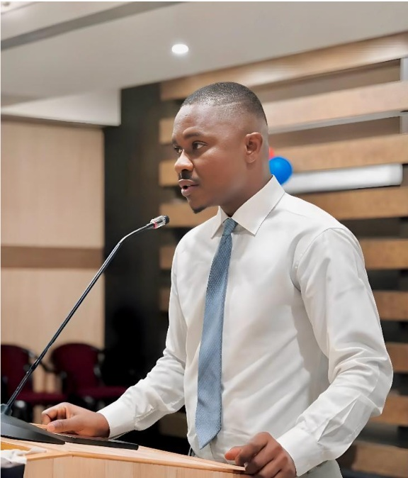
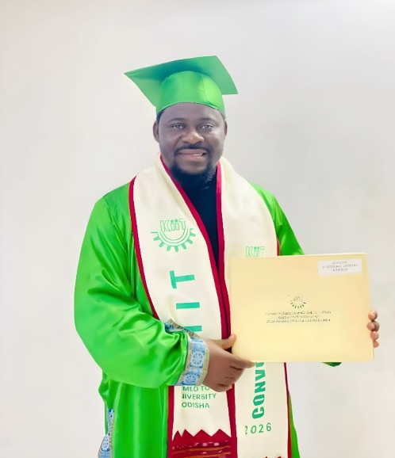

Liberian Students Union in Odisha
PROMOTE ACADEMIC EXCELLENCE, ETHICAL CONDUCT, AND
PROFESSIONAL DEVELOPMENT AMONG LIBERIAN STUDENTS IN ODISHA.
Mission
The mission of Liberian Students Union in Odisha is rooted in the
empowerment and support of every Liberian Students residing in Odisha.
We are dedicated to fostering an environment where students can thrive
academically and personally.
- We promote academic excellence, ethical conduct, and professional
development among Liberian students in Odisha.
- Advocate for the interest, rights, and welfare of Liberian Students.
- Serve as a platform for cultural expression and intercultural exchange.
- Foster a spirit of solidarity, mutual expression and intercultural exchange.
- Represent the Union in all external engagements, both locally and internationally.
Vision
The vision of the Liberian Student Union in Odisha is to create an
inclusive and supportive environment for every Liberian student in Odisha.
We are committed to the academic success and personal growth of our members, ensuring that they have
access to the resources, guidance, and support needed to excel.
- Provide orientation, mentorship, and support for new Liberian Students.
- Coordinate with universities, embassies, international agencies, and local stakeholders.
- Mobilize students for national development and promote a culture of service.
- Encourage innovation, entrepreneurship, and skills development.
- Provide emergency assistance and support mechanisms for students in distress.
Our Motto
Unity, Excellence, and Service
Guided by shared purpose, we stand together to inspire growth, uphold excellence, and serve our community with dignity.
Meet Our Leaders
Get to Know the Dedicated Individuals Leading Our Union

Mulbah K. Livingstone
President
Our President is a Liberian Youth Leader, Entrepreneur and Master's
Student in Human Resource Management with emphasis in Information
Technology.
He graduated from the Young Political Leadership School of Africa and
is the founder of Citizens Alliance for Communities Network, a Liberian-based NGO.

Lucious T. Ben
Vice President
Our Vice President is a B.Tech Student in Electrical
Engineering, he is a passionate advocate for student welfare.
His vision is to empower individuals and strengthen our community through leadership
and skills gained from his field of studies in contributing to the sustainable
development of Liberia and our global village.

Abraham Daniel
General Secretary
Our General Secretary is a BSc Candidate in Nursing.
He is a passionate advocate for student welfare and is committed to
fostering a supportive and inclusive environment for all members of
the union.
Latest Announcements
Stay updated with the latest news and
Information of
Liberian Student Union in Odisha
March 3, 2025
Annual General Meeting
Our Annual General Meeting is scheduled for every first Sunday of each month,
where all members of this union from across Universities in Odisha
sit and discuss important matters relating to the growth and development of
this institution.
June 15, 2026
Graduation Ceremony
We are excited to announce the graduation ceremony for Liberian students in Odisha.
In May of 2026, a group of Liberians
graduated from their respective universities celebrating
a great milestone.
There was a great celebration and recognition of their hard work and
dedication to their studies, there were six students
who graduated from CV Raman Global University (CGU),
Bhubaneswar, Odisha, India.
Also, there were five students who graduated from Kalinga Institute of
Industrial Technology (KIIT), Bhubaneswar, Odisha, India.
April 25, 2026
Death of a Union Member
We are saddened to announce the passing of one of our union members who passed away in Liberia.
Please join us in remembering the life and contributions of Mr. Hezekiah Jorkeah to our community.
Mr. Jorkeah was part of the graduates from Kalinga Institute of Industrial Technology (KIIT), he also
served as Chair-person of the Liberian Student at KIIT and later became the Superintendent of Odisha at
the level of All Liberian Students in India (ALSI).
Rest In Peace Leader🙏🙏
